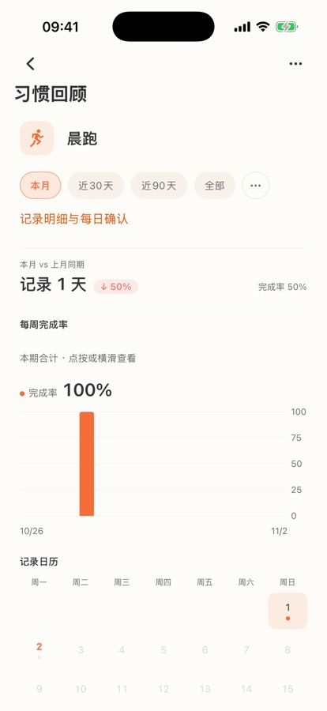
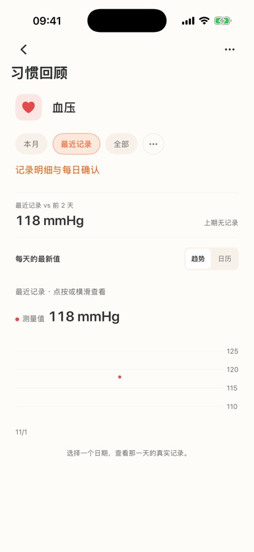
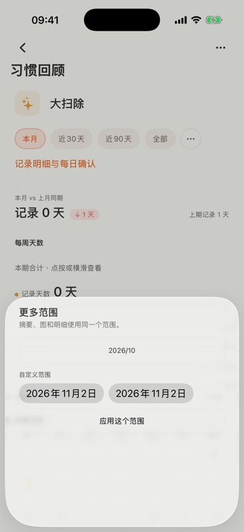

习惯模块整改原型 v1 · 待拍板
说明文字灰底的「A/B」是给东林看的选择题；橙字是本轮方案的要点。手机屏可滚动。
9:41●●●●
11月1日–11月2日 · 已过 2 天
1 天
上月同期 10/1–10/2 · 记录 0 天
每周完成率
10/26–11/1
10/26–11/1
完成 1/7 天 · 14%
10/26–11/1
显示到上个完整周；本周（11/2 今天起）下周一出现
记录日历 · 11月
屏1 · 打卡型「本月」（新习惯/月初的最惨稀疏态）
① 头部习惯名下新增习惯描述一行（「🏃 为了年底的半马，每天 3 公里」）——没写描述的习惯不显示这一行。
② 对比卡写明起止日期与已过天数；上月同期 0 天时如实写「记录 0 天」，不出涨跌箭头。
③ B方案整周柱：只显示完整周（10/26–11/1），轴标即周起止，残周不画假柱、注明「本周下周一起出现」——而不是现状的「10/26 一根 100%」。
④ 空虚圆 = 今天（尚未打卡）；月历按周一起排，11/1 在周日列。
9:41●●●●
8月5日–11月2日 · 共 90 天
近90天 vs 前90天（5/7–8/4）
完成率 70% · 前90天 54%（↑16 个百分点）
每周完成率
8/10–11/1
10/19–10/25
完成 5/7 天 · 71%
8/109/710/510/26
屏2 · 打卡型「近90天」
① B方案：整周到上个完整周（8/10–11/1），12 根柱每根都是完整 7 天；首尾残周不画假柱。
② 涨跌胶囊只用天数口径（↑14 天）；完成率口径写进副行（70% vs 54%）——现状「63 天 ↑14%」的口径混排正是被挑刺的 P0。
③ 选中柱读数 = 「10/19–10/25 完成 5/7 天 · 71%」，一眼看出柱子代表一周。
④ 轴标 4 处（8/10 · 9/7 · 10/5 · 10/26），与 12 根整周柱对齐。
⑤ 橙色选中态示意范围胶囊的新选中样式（白底浮起块）。
9:41●●●●
11月1日–11月2日 · 已过 2 天
0 天
这个月还没有记录 · 上次是 10/29 · 70.5 kg
这个月还没有称过
上次记录 10/29 · 70.5 kg
去记今天的体重
屏3 · 测量型「本月」空态（东林实报的场景）
① 对比卡照说事实：本月 0 天、上次是 10/29 · 70.5 kg——记录没丢，只是不在本月。
② 空图改成「这个月还没有称过」卡 + 上次记录 + 去记录按钮，替代现状的「这个范围还没有数值记录。无记录不会被填成 0。」和「—」。
9:41●●●●
最近 30 次记录 · 7/6–10/29
7/6–10/29 · 平均 71.8 kg
70.5 kg
↓ 1.3
前一次 8/6 · 71.8
↓ = 比前一次记录轻了（测量型只标方向）
趋势
10/29
70.5 kg
7/68/28/3010/29
屏4 · 测量型「最近记录」—— 轴即范围
① 范围行写死窗口：「最近 30 次记录 · 7/6–10/29」——「最近记录」不再是一句黑话。
② 测量型主数字 = 最近一次值 70.5 kg（现状 71.7 是均值却没说），变化 = 与上次记录比。
③ 横轴首末刻度 = 范围首末日（7/6 / 10/29），中间点按真实时间分布；末点贴右缘。
④ 高亮圈 = 当前选中的记录点（本图为示意，未画满 30 点）。⑤ 计数型（阅读）同屏式样，主数字 = 合计 + 日均。
9:41●●●●
摘要、图表和明细使用同一个时间范围。
快速选
自定义
选好开始和结束，这里显示共几天
屏5 · 「更多范围」重做 → 「选范围」
① 用项目标准弹层壳：拖拽条、左上 ✕、说明左对齐、主按钮橙色实心贴底（现状全是描边按钮）。
② 「上月」升为一键快捷（现状只有一个「2026/10」孤按钮）。
③ 自定义两个日期框各带「开始/结束」小标签，选中范围实时显示「共 N 天」（现状两个光秃秃的框）。
④ 主按钮文案「用这个范围」。
⑤ 弹层外底色压暗（示意）。
9:41●●●●
晨跑
🏃 为了年底的半马，每天 3 公里
18 / 50
为什么开始？这句话会陪着你打卡（可选）
🏃
11 天
晨跑 · 🏃 为了年底的半马，每天 3 公里
9:41●●●●
今天的打卡 · 2 个
普通行同规则：有描述时替换「连续 5 天」副行（阅读行示例）。
9:41●●●●
11 天
晨跑 · 别断了今天
🏃 为了年底的半马，每天 3 公里
打卡
📖
阅读
🔥 连续 5 天
今晚 30 分钟 · 睡前读几页
30 分钟
普通行示例：连续天数一行 + 描述一行。
屏6 · 习惯描述（Emoji 原生支持，不用特殊处理）
左：表单。名称下方多行输入框，占位「为什么开始？…」，右下字数 18/50；预览卡同步显示描述。
中（A 版）：大卡副行直接换成描述——「别断了今天」这类口号让位（有描述时才替换）。
右（B 版）：保留原副行，描述另起一行。
A/B 二选一：A 版大卡更干净、描述曝光强；B 版信息全但行数多。
现状对照（判读用）

现状：打卡型「本月」——轴上出现上周的 10/26，残周画成 100%。

现状：血压只有 1 条记录——点悬在图中间，轴上只有左上角一个 11/1。

现状：更多范围卡片——无壳无标签、描边按钮、孤零零的「2026/10」。